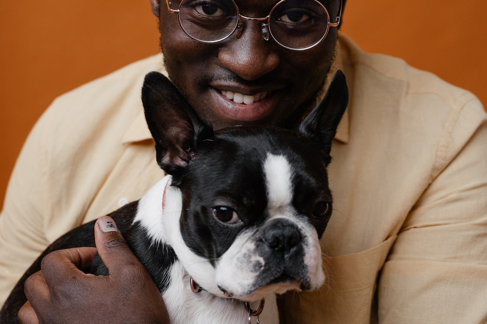

Nossos Ensaios
Nossos amigos de quatro patas são muito mais do que animais de estimação; eles são membros queridos de nossas famílias. Neste ensaio fotográfico especial, celebramos a alegria, a lealdade e a conexão única que compartilhamos com nossos amados pets.
Cada imagem captura a personalidade única do seu fiel companheiro. Seja ele um brincalhão cachorro, um gato curioso, ou qualquer outro ser peludo, suas características individuais e expressões peculiares são transformadas em arte através da lente da câmera.
Nosso objetivo é eternizar os momentos especiais que você compartilha com seu pet. Seja correndo alegremente no parque, compartilhando olhares afetuosos no sofá, ou explorando o mundo juntos, essas fotos capturam a cumplicidade e o amor que vocês dividem. Cada lambeijo, cada olhar carinhoso e cada brincadeira são momentos preciosos que merecem ser lembrados. E, através deste ensaio, transformamos essas memórias em obras de arte que você pode apreciar para sempre.
Enquanto você navega por estas imagens, esperamos que você sinta a mesma alegria e amor que seu pet traz para sua vida todos os dias. E, mais importante, esperamos que essas fotos se tornem lembranças queridas que você sempre carregará consigo.
Nossos amigos peludos são mais do que meros animais; eles são fontes inestimáveis de alegria, companheirismo e amor. Através deste ensaio fotográfico, celebramos essa conexão única e atemporal entre humanos e seus fiéis amigos de quatro patas.
Neste ensaio fotográfico, mergulhamos profundamente na beleza intemporal de um amor que resistiu ao teste do tempo. Apresentamos um casal de idosos cuja jornada juntos é uma história de amor e resiliência, registrada através das lentes de nossa câmera.
As rugas em seus rostos contam histórias de décadas de experiências compartilhadas. Cada linha é um registro de sorrisos compartilhados, de lágrimas secas e de abraços que acalmaram. No entanto, essas rugas também são testemunhas de momentos felizes e de uma vida vivida ao máximo.
Começamos a sessão em seu lar, onde as paredes abrigam lembranças de toda uma vida. A sala de estar onde assistiram ao seu primeiro filme juntos, o jardim onde passaram tardes preguiçosas de verão, e a cozinha onde prepararam inúmeras refeições juntos. Cada foto é uma janela para sua história de amor.
Em seguida, nos dirigimos ao parque onde se conheceram pela primeira vez, um lugar repleto de nostalgia. Sentados no mesmo banco onde trocaram suas primeiras palavras, eles compartilharam sorrisos e olhares que transcenderam o tempo. Cada clique da câmera capturou a magia desse momento.
O ensaio continuou ao longo das ruas da cidade, onde caminharam de mãos dadas, como fizeram durante toda a vida. O cenário urbano contrastava com a suavidade de seu amor, mostrando que, mesmo em meio ao caos da vida, eles sempre encontraram serenidade um no outro.
No final do dia, voltamos para a casa deles, onde uma imagem especialmente emocionante foi capturada: um abraço caloroso na varanda, com o sol se pondo ao fundo. Foi um momento que encapsulou todo o calor e a profundidade do amor deles.
Este ensaio fotográfico é mais do que uma série de imagens; é um tributo à jornada de uma vida compartilhada, aos momentos que moldaram sua história e à força do amor que perdura com o passar dos anos. Cada foto é uma prova de que a beleza do amor não diminui com a idade; ela apenas se torna mais profunda e significativa.
Neste ensaio fotográfico, celebramos a beleza da força interior e a resiliência que transcende as limitações físicas. Nosso objetivo é mostrar a incrível jornada de uma mulher cadeirante, que enfrenta desafios com graça e determinação, transformando sua realidade em inspiração.
Começamos a sessão em um parque, onde a natureza e a cadeira de rodas se fundem em uma dança de liberdade. Cada foto captura a alegria de sentir o vento nos cabelos e o sol no rosto enquanto ela navega por trilhas sinuosas. A cadeira é uma extensão de sua independência, permitindo-lhe explorar o mundo com sua própria perspectiva única.
Em seguida, nos dirigimos ao centro da cidade, onde a urbanidade encontra a mobilidade. Ela atravessa avenidas movimentadas e navega pelas calçadas, provando que as barreiras arquitetônicas não podem impedir seu espírito destemido. A cidade se torna um palco onde ela demonstra sua capacidade de superar desafios.
No estúdio, criamos um ambiente íntimo que destacou sua beleza interior e exterior. Cada retrato reflete a confiança que ela conquistou ao longo de sua jornada, mostrando que a verdadeira beleza transcende qualquer limitação física. Cada sorriso e olhar revelam uma alma forte e resiliente.
O ensaio também incluiu momentos de reflexão, onde ela compartilhou sua história e experiências, inspirando todos nós com suas palavras de sabedoria e perspicácia. Seu testemunho é um lembrete poderoso de que a deficiência não define uma pessoa; é apenas uma parte de sua jornada.
Este ensaio fotográfico é uma celebração da diversidade, da resiliência e da beleza que existe em todos nós, independentemente das circunstâncias. Cada imagem é um tributo à força interior e à determinação de superar obstáculos, lembrando-nos de que a verdadeira beleza está na capacidade de enfrentar desafios com dignidade e graça.